Co to jest
Inżynier to program na Twoim komputerze. Czyta dane z gry i mówi do Ciebie przez słuchawki: ostrzega przed szybszymi autami, mówi, kiedy zjechać do boksu, co zmienić na postoju, gdzie tracisz czas. Na pytania odpowiada głosem – trzymasz przycisk na kierownicy, mówisz, puszczasz.
Pit wall to strona w przeglądarce (komputer albo telefon). Cały zespół widzi tam na żywo stan auta, rywali, pogodę i grafik zmian kierowców, a kierowcy można wysłać wiadomość, którą inżynier przeczyta.
Możesz jeździć sam (tryb Solo) albo w zespole.
Czego potrzebujesz
- Windows 10 lub 11 i Le Mans Ultimate albo Assetto Corsa (Steam; do Assetto Corsa zalecany Custom Shaders Patch – rozdział Assetto Corsa).
- Słuchawki z mikrofonem i wolny przycisk na kierownicy (albo klawisz na klawiaturze).
- Internet (głos inżyniera, rozpoznawanie mowy i pit wall działają przez internet).
- Darmowy klucz Groq – bez niego nie działa AI (lepsze rozpoznawanie mowy, odpowiedzi AI); jak go zdobyć: rozdział AI.
Instalacja (2 minuty)
- Pobierz instalator
PitWallCrew_Setup_….exez posta na Patreonie FR Mods (post publiczny – darmowe demo; pełną wersję odblokujesz w aplikacji przyciskiem Zaloguj przez Patreon – pobierze się sama, ustawienia zostaną). - Uruchom pobrany plik. Instalator nie ma jeszcze podpisu cyfrowego, więc Windows może pokazać okno „System Windows ochronił ten komputer” – kliknij Więcej informacji → Uruchom mimo to.
- W instalatorze wybierz język (ten sam ustawi się w programie; hiszpański, włoski i duński wybierzesz potem w programie: Dźwięk i język → Język / Language), potem OK, Dalej i Zainstaluj. Instalacja trwa około minuty, niczego nie pobiera (Python jest w środku) i nie wymaga uprawnień administratora.
Program i Twoje dane trafią do
Dokumenty\Pit Wall Crew. Skróty Pit Wall Crew na pulpicie i w menu Start możesz odznaczyć. Na koniec zaznacz, czy uruchomić aplikację, samouczek głosowy i stronę pełnej wersji na Patreonie, i kliknij Zakończ. - Aplikacja otworzy się w wybranym języku, a obok okienko Pierwsze kroki – przejdź je po kolei (przy każdym punkcie jest przycisk Otwórz):
- Zespół: na górze Utwórz nowy zespół… (pierwsza osoba) albo kod i hasło zespołu od kolegów; potem Twoje imię – nowe imię po zapisaniu samo trafi do kierowców zespołu; jeździsz sam – tryb Solo.
- Mikrofon i przycisk: wybierz mikrofon (pasek ma się ruszać, gdy mówisz), kliknij Ustaw: naciśnij przycisk… i naciśnij przycisk na kierownicy.
- Dźwięk i język: wybierz głos inżyniera i kliknij ▶ Odsłuchaj.
- Klucz Groq (darmowy, do AI): jak go zdobyć → Zaawansowane → Własny klucz Groq → Sprawdź klucz.
- Patreon: na stronie Inżynier Zaloguj przez Patreon – wtedy dostajesz aktualizacje.
- Kliknij Zapisz i uruchom ponownie moduł inżyniera.
- W LMU raz: Settings → Gameplay → Enable Plugins = ON (bez tego program nie widzi danych z gry; Assetto Corsa: rozdział Assetto Corsa). Wyjedź na tor, przytrzymaj przycisk i zapytaj np. „ile paliwa?”.
Masz starą instalację z zipa (INSTALL.bat)? Uruchom nowy instalator. Jeśli program był rozpakowany do Dokumenty\Pit Wall Crew, ustawienia zostaną same.
Jeśli był w innym folderze – skopiuj ze starego folderu programu config.toml i folder data do Dokumenty\Pit Wall Crew\Program (albo po prostu przejdź jeszcze raz „Pierwsze kroki”).
Starsza instalacja z innym Pythonem niż 3.12 po aktualizacji pokaże komunikat, że trzeba ją zainstalować nowym instalatorem.
Samouczek głosowy (1–2 minuty): przy pierwszym uruchomieniu inżynier prowadzi przez 5 kroków – test radia, „ile mam paliwa?”, „kto jest za mną?”, dwa krótkie naciśnięcia przycisku, „cisza”. Od razu widać, czy mikrofon i przycisk działają. Rusza dopiero, gdy przycisk mówienia jest przypisany (albo już raz go naciśniesz) i mikrofon daje sygnał; nie startuje w trakcie wyścigu. Pominięcie: „pomiń samouczek” (albo odznacz go na końcu instalacji); ponownie: Pomoc → Instrukcja → Samouczek głosowy.
Odinstalowanie: Ustawienia Windows → Aplikacje → Pit Wall Crew → Odinstaluj (albo menu Start → Dezinstalacja aplikacji Pit Wall Crew). Usuwa program; Twoje ustawienia i nagrania (config.toml, foldery data i recordings w Dokumenty\Pit Wall Crew\Program) zostają – żeby usunąć wszystko, skasuj potem folder Dokumenty\Pit Wall Crew.
Okno aplikacji
Ikona Pit Wall Crew otwiera aplikację. Inżynier uruchamia się sam, a gdy włączysz grę i wyjedziesz na tor – zaczyna mówić. Motyw ☾ Ciemny / ☀ Jasny przełączasz na dole paska po lewej (od razu, bez restartu). Czasy i sektory w kolorach jak na pit wallu: fioletowy – najlepszy w klasie, zielony – Twój rekord, żółty – wolniej. Pod kartami jest pasek Sektory ostatniego okrążenia, przy statusach żółta flaga / safety car. Strona Raporty z jazdy (pod Inżynierem) zbiera raporty po stintach i wyścigach.
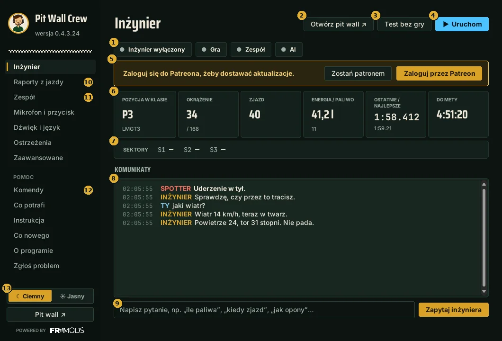
- Stan: czy inżynier działa, czy widzi grę („Jedziesz” albo „podgląd” – gdy jedzie kolega), połączenie z zespołem i AI. Zielone = w porządku.
- Otwórz pit wall – strona zespołu w przeglądarce, od razu zalogowana do zespołu programu (bez wpisywania hasła).
- Test bez gry – symulowany wyścig. Sprawdzisz głos, mikrofon i pit wall bez uruchamiania LMU.
- Uruchom / Zatrzymaj inżyniera.
- Patreon – zaloguj się, żeby dostawać aktualizacje. Po zalogowaniu zostaje tylko „Wyloguj z Patreona”.
- Najważniejsze liczby: pozycja, okrążenie, za ile zjazd, energia albo paliwo, czasy, czas do mety.
- Komunikaty – wszystko, co inżynier powiedział, Twoje pytania i wiadomości od zespołu. Czerwone = pilne.
- Pole pytania – możesz napisać pytanie zamiast mówić.
- Ustawienia – zespół, mikrofon, głos, ostrzeżenia, zaawansowane (rozdział niżej).
- Pomoc – lista komend, opis funkcji, instrukcja (tu też Pierwsze kroki), zmiany w wersjach, informacje o programie i Zgłoś problem.
- Pit wall – to samo co przycisk 2, z każdej strony aplikacji.
Ustawienia
Po każdej zmianie kliknij Zapisz i uruchom ponownie moduł inżyniera (prawy dolny róg).
Zespół
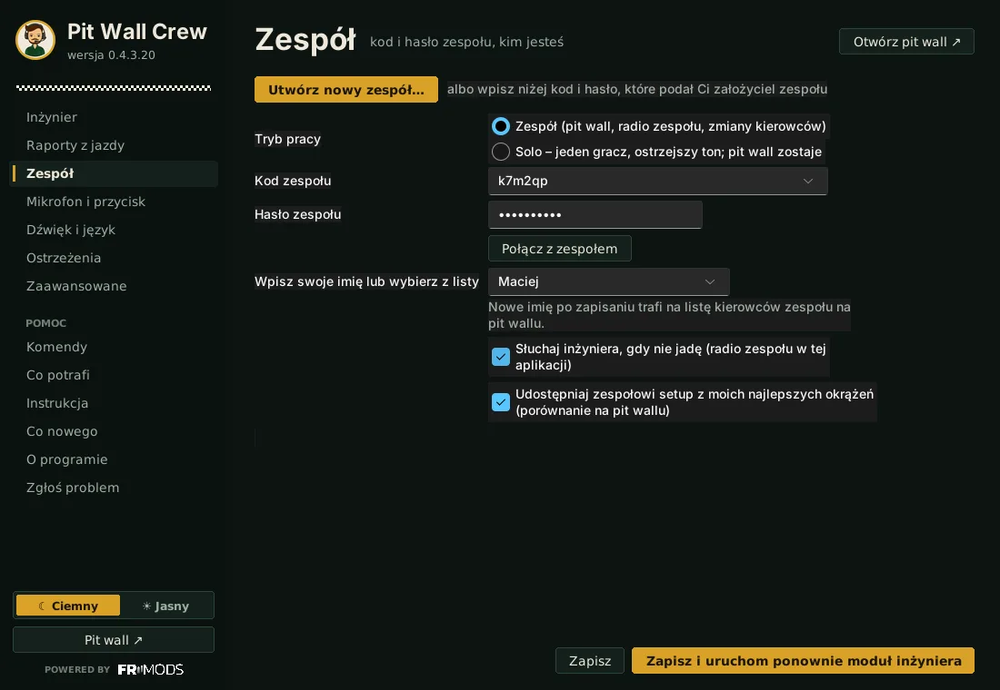
- Solo – jeździsz sam: nie wpisujesz nic więcej. Pit wall nadal działa jako Twój podgląd.
- Zespół – jedna osoba klika Utwórz nowy zespół… (nazwa i hasło) i dostaje kod zespołu (6 znaków). Pozostali wpisują ten kod i hasło. Potem Połącz z zespołem i wybierz z listy, kim jesteś.
- Kod zespołu ma listę zespołów, z którymi łączył się ten komputer (same kody i nazwy, bez haseł). Wybierz z listy, wpisz hasło tamtego zespołu i zapisz. Pit wall w przeglądarce też pamięta kody: przy logowaniu i w zakładce Zespół („Inne zespoły na tym urządzeniu”).
- Kod i hasło przekazujcie sobie tylko prywatnie – kto je zna, widzi stan auta i może pisać do kierowcy.
- Słuchaj inżyniera, gdy nie jadę – gdy jedzie kolega, słyszysz komunikaty jego inżyniera (radio zespołu).
- Udostępniaj zespołowi setup z moich najlepszych okrążeń – setup z gry trafia do bazy zespołu razem z najlepszym okrążeniem; pit wall pokazuje różnice w setupie na mapie porównania. Odznacz, jeśli nie chcesz go udostępniać.
Mikrofon i przycisk
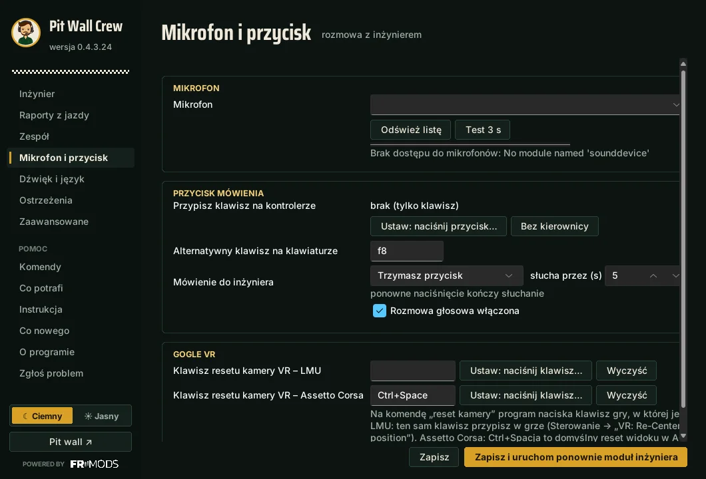
- Wybierz mikrofon i kliknij Test 3 s – powiedz coś i sprawdź, czy pasek się rusza.
- Ustaw: naciśnij przycisk… i naciśnij przycisk na kierownicy, którym będziesz mówić (działa każdy przycisk, także MOZA o numerach powyżej 32). Można też ustawić klawisz.
Dźwięk i język
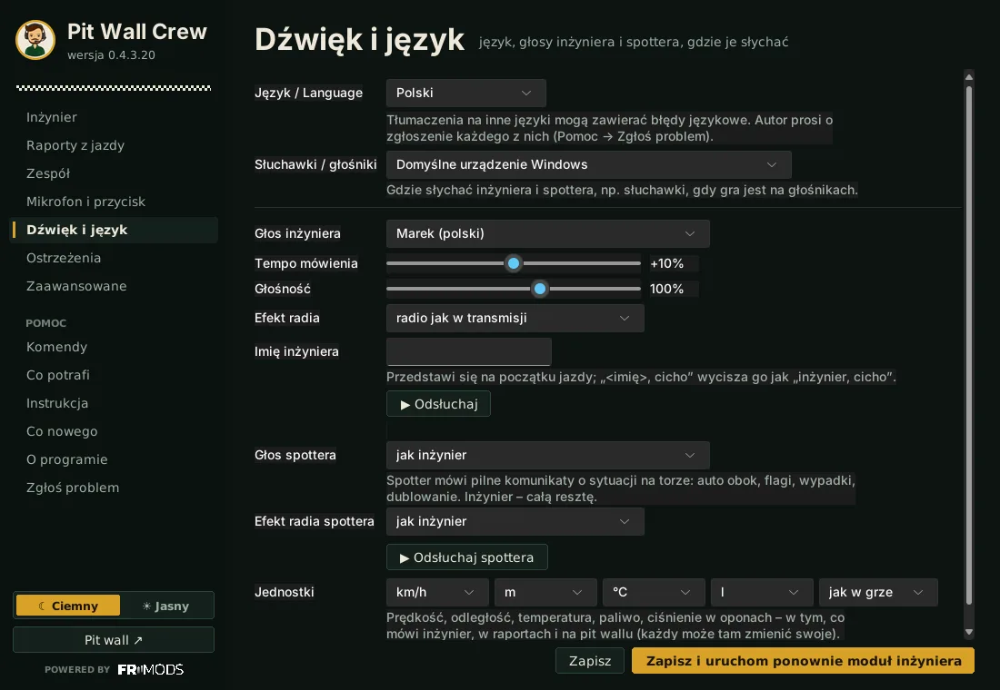
- Język / Language – na samej górze, zawsze z angielskim podpisem, żeby łatwo go znaleźć.
- Słuchawki / głośniki – urządzenie, na którym słychać inżyniera i spottera, np. słuchawki, gdy gra jest na głośnikach.
- Głos inżyniera, tempo, głośność, efekt radia i imię inżyniera. ▶ Odsłuchaj odtworzy próbkę.
- Gdy nadasz imię (np. Marek), inżynier się przedstawi, a „Marku, cicho” go wyciszy.
- Głos spottera – osobny głos dla pilnych komunikatów o sytuacji na torze (auto obok, flagi, wypadki, dublowanie); „jak inżynier” = ten sam głos. Efekt radia spottera – osobno od inżyniera (np. spotter bez trzasków, inżynier przez radio). ▶ Odsłuchaj spottera odtworzy próbkę.
Ostrzeżenia
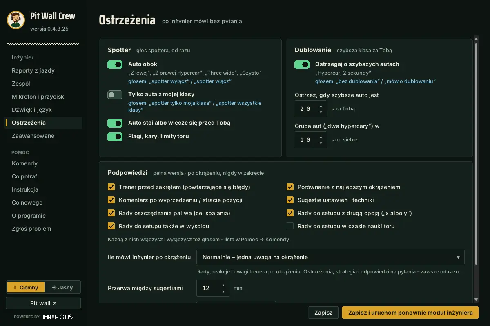
Co inżynier mówi bez pytania: dublowanie przez szybsze klasy (i od ilu sekund), auta stojące na torze, flagi, trener przed zakrętem, porównanie z najlepszym okrążeniem, komentarze po wyprzedzeniu, sugestie ustawień. Trener, porównania i sugestie ruszają, gdy jeździsz równo (3 czyste okrążenia o podobnym czasie) – nie w czasie nauki toru. Wyjątek: Rady do setupu także w czasie nauki toru (albo głosem „setup od razu”) – gdy setup jest tak zły, że trudno o równe okrążenia. Przerwa między sugestiami – najmniej tyle minut między kolejnymi radami. Wszystko to włączysz i wyłączysz też głosem w trakcie jazdy (np. „bez trenera”).
Spotter: „Z lewej”, „Z prawej Hypercar”, „Three wide” (po angielsku, jak mówią spotterzy) i po której stronie są auta, „Czysto” – zawsze na końcu, gdy nikogo już nie ma obok. Pole „Spotter tylko dla aut z mojej klasy” pomija inne klasy. Spotter milczy w alei serwisowej, w kwalifikacjach (w LMU prywatne) i w wyścigu przed startem. Na polu startowym inżynier powie, gdy kierownica jest skręcona o ponad 90°. Głosem: „spotter wyłącz” / „spotter włącz”, „spotter tylko moja klasa” / „spotter wszystkie klasy”. Gdy ktoś jedzie obok, inżynier milczy (także przy wyłączonym spotterze), żeby nie przeszkadzać w walce – ustawienie Ostrzeżenia → Inżynier milczy, gdy ktoś jedzie obok: tylko w wyścigu (domyślnie), zawsze albo nigdy.
Uderzenie: kilka sekund po wypadku inżynier mówi „Sprawdzę, czy przez to tracisz”, a po dwóch czystych okrążeniach podaje stratę na okrążenie, czy spadła prędkość maksymalna i czy naprawa się opłaca. Gdy nie zna czasu naprawy, mówi, do ilu sekund naprawa się opłaca (np. „Naprawa do 45 sekund się opłaca, dłuższą przerwij”) – naprawę w grze można przerwać. Czas naprawy możesz też podać: „naprawa 38 sekund”.
Zaawansowane
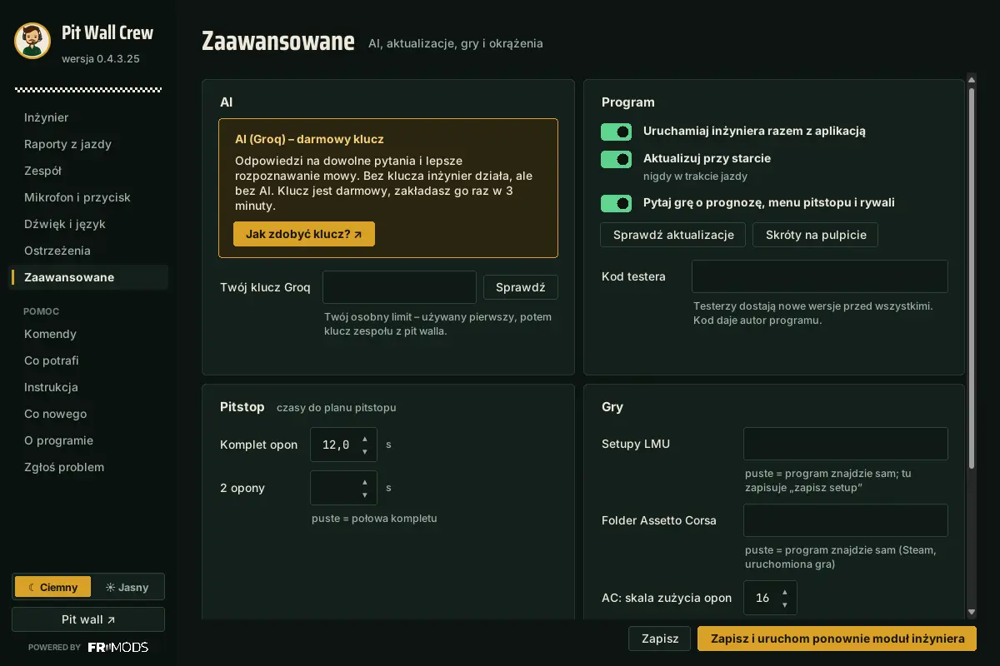
Czas zmiany kompletu opon, automatyczny start inżyniera, skróty na pulpicie, aktualizacje i własny klucz Groq (opcjonalnie – Twój osobny limit), kod testera i „Pytaj grę o prognozę, menu boksu i rywali”. Assetto Corsa: skala zużycia opon i Assetto Corsa: folder gry – rozdział Assetto Corsa. Folder setupów LMU – zwykle puste (program sam znajdzie folder gry); tam „zapisz setup” zapisuje nowy setup.
Rozmowa z inżynierem
Trzymaj przycisk, mów, puść. Naciśnięcie przycisku przerywa też to, co inżynier właśnie mówi.
Przykłady: „ile paliwa?”, „kiedy zjazd?”, „które opony zmienić?”, „kto przede mną?”, „gdzie tracę?”, „jaka pogoda?”, „za ile dubluje hypercar?”, „cisza” (całkowite wyciszenie do następnego naciśnięcia), „tylko pilne”, „powtórz”.
Pełna lista jest w aplikacji: Pomoc → Komendy.
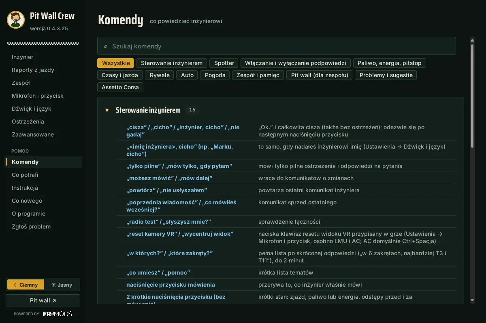
Pytanie, którego program nie zna, trafia do AI (jeśli jest klucz Groq) razem z danymi wyścigu. Pytania o sam program („jak wyłączyć mówienie o zbliżających się prototypach?”, „niech spotter nie mówi o stronach”) AI odpowiada na podstawie tej instrukcji i ustawień: podaje komendę albo miejsce w ustawieniach, a gdy dokładnie takiej opcji nie ma – mówi to i podaje najbliższą. Polecenie powiedziane po swojemu („daj nowe gumy na prawo”, „esemes do Patryka, że wstaje”) AI dopasowuje do listy wszystkich komend (także w demo) i program je wykonuje; następnym razem to samo zdanie działa od razu, bez AI („zapomnij nauczone polecenia” je kasuje). Przekręcone przez rozpoznawanie mowy słowa („zapankuj 40 litrów”) program poprawia sam, bez internetu, a imiona kolegów z zespołu i nazwiska rywali obok podpowiada rozpoznawaniu mowy.
- Jak mówi inżynier: sam z siebie mówi pełnymi zdaniami, za każdym razem trochę innymi słowami (ta sama treść, bez powtarzania w kółko tego samego zdania). Kilka komunikatów naraz łączy w jedną wypowiedź, a nieaktualne (np. odstęp do rywala sprzed chwili) pomija. Rzadko reaguje na to, co się dzieje: najlepsze okrążenie, powrót do rytmu po błędzie, równa jazda, rywal przed Tobą w zasięgu ataku. Odpowiedzi na pytania są krótkie i od razu do rzeczy.
- Krótkie naciśnięcia przycisku bez mówienia: 1 – ucisz, 2 – krótki stan (zjazd, paliwo lub energia, odstępy), 3 – powtórz, 4 – poprzedni komunikat. Głosem: „powtórz”, „poprzednia wiadomość”.
- Pośpiech: gdy dodasz do pytania „kurwa” (np. „ile kurwa mam paliwa?”), inżynier odpowie wyraźnie szybciej.
- Menu boksu głosem: „na postoju energia 60 procent i prawe opony”, „zmień lewe opony”, „nowe opony” (albo „ustaw nowe opony”), „miękkie / średnie / twarde opony” (albo „zmień na twarde”), „zatankuj 30 litrów”, „zatankuj 40%” (procent = energia), „nie tankuj” (energia i paliwo na 0), „zatankuj do mety” (zakłada zjazd, gdy skończy się energia lub paliwo w aucie), „zatankuj do mety, zjeżdżam teraz”, „ustaw postój według strategii”. Gdy mowa zostanie źle rozpoznana, AI dopasuje polecenie. Kolega z zespołu może to zrobić z pit walla: „Zapytaj inżyniera”.
- Reszta menu boksu: „ciśnienie przód o 2 w dół”, „lewa przednia 140”, „ciśnienia według pomiarów”, „napraw uszkodzenia” (albo „napraw tylko nadwozie”, „napraw wszystko”), „wymień hamulce”, „skrzydło o 1 w górę”, „zamknij przednie kanały hamulców”, „grill na 3”, „na postoju deszczowe opony”, „zmiana kierowcy na Kamila”.
- Propozycja postoju: 2 okrążenia przed zjazdem (i przy deszczu) inżynier pyta „Mogę ustawić pitstop: … Pasuje?” – „tak” ustawia menu boksu.
- Podsumowanie stintu: po zjeździe do boksu, zmianie kierowcy albo powrocie do garażu (stint od 3 okrążeń) pełne podsumowanie jest na stronie Raporty z jazdy w oknie programu (plik
recordings\stint_….txt, kopia na pit wallu): tempo, błędy (wyjazdy, uderzenia, powtarzające się blokowanie, buksowanie, ABS, TC – w których zakrętach), gdzie tracisz do najlepszego okrążenia, a w pełnej wersji także przyczepność w zakrętach i setup. W trakcie stintu: „podsumowanie stintu”. Kopiuj raport kopiuje raport do wklejenia (np. na Discordzie). Przycisk Jak powstaje raport? wyjaśnia w kilku krokach, skąd są dane (błędy i straty w zakrętach liczą się po 3 równych, czystych okrążeniach). - Historia zmian setupu: po „zmieniłem …” i 3 czystych okrążeniach inżynier sam ocenia zmianę (pomogło / pogorszyło / bez zmian) i zapamiętuje ją dla toru i auta; każda rada setupu mówi też skutek uboczny. W LMU i w Assetto Corsie (z CSP i aplikacją w grze) inżynier sam widzi zmianę w garażu (co i o ile kliknięć), także bez „zmieniłem”. Gdy zmiana nic nie dała, proponuje ten sam kierunek mocniej (np. „z 8 na 9 nic nie dała, spróbuj na 11”), a skrzydło i prześwit tylko o klik dalej. Gdy i to nic nie da, mówi, że auto na tym torze na to nie reaguje, i już tego nie proponuje. Przy nierównych czasach prosi o 1–2 okrążenia więcej. Gdy zmiana pogorszyła, mówi dokładnie, na co wrócić („przedni stabilizator: wróć na 10”, w AC: o ile kliknięć). Gdy przed i po zmianie były inne warunki (cieplejszy tor, mniej paliwa, zużyte opony, inna mieszanka, mokry tor), mówi to i że ocena jest mniej pewna.
- Przyczepność w zakrętach (pełna wersja): „przyczepność?”, „gdzie mam zapas?”, „przyczepność T5” – jak blisko granicy opon jesteś na wejściu, w środku i na wyjściu (100% = najwięcej, ile pokazałeś w tym zakręcie) i co zrobić tam, gdzie jest zapas. LMU i Assetto Corsa.
- Setup czy styl jazdy: zanim inżynier zaproponuje zmianę setupu, sprawdza na 4–8 czystych okrążeniach, czy problem jest za każdym razem (auto – rada do setupu), czy tylko gdy jedziesz inaczej, np. szybciej wjeżdżasz albo wcześniej dajesz gaz (jazda – rada do jazdy). Rada setupu uwzględnia też warunki (zimne lub zużyte opony, paliwo, temperatura toru), ciśnienia, skutek uboczny zmiany i rodzaj sesji; po 3 okrążeniach gorzej – wróć do poprzedniego ustawienia.
- Setup: „podsumuj sugestie” – wszystkie proponowane zmiany naraz; „zapisz setup” – nowy plik „PWC_…” z tymi zmianami w folderze toru (oryginał bez zmian), wczytasz go w garażu.
Assetto Corsa
Pit Wall Crew działa też z Assetto Corsa (AC1, Steam). To ten sam program – ten sam inżynier, spotter, pit wall i baza zespołu; program sam rozpoznaje, która gra jest uruchomiona.
- Custom Shaders Patch (CSP) – bardzo zalecany (Content Manager → Ustawienia → Custom Shaders Patch). Z CSP działa najwięcej: deszcz i kałuże (Rain FX), postój głosem, analiza podsterowności i nadsterowności w zakrętach, sektory, rady o TC i ABS. Bez CSP działa prostsza aplikacja Python – z mniejszą liczbą funkcji.
- Aplikacja w grze – program sam kopiuje ją do gry. Włączaj Pit Wall Crew przed Assetto Corsa; z CSP aplikacja działa sama w tle. Bez CSP włącz ją raz: Content Manager → Ustawienia → Assetto Corsa → Aplikacje Python → zaznacz Pit Wall Crew.
- Gra na innym dysku – program znajdzie ją sam. Gdy nie znajdzie („Nie znalazłem Assetto Corsa”), wpisz folder gry (ten z
AssettoCorsa.exe) w Ustawienia → Zaawansowane → Assetto Corsa: folder gry. - Opony – „zostało X%” jak w Sidekicku; tę samą skalę co w Sidekicku ustaw w Ustawienia → Zaawansowane → Assetto Corsa: skala zużycia opon. Inżynier ostrzega ok. 3 okrążenia przed gwałtownym spadkiem przyczepności. Własny próg dla auta: „w tym aucie zmieniam opony przy 97” – ostrzeżenie 2 okrążenia wcześniej.
- Postój głosem (z CSP) – inżynier ustawia menu szybkiego postoju w grze: „zatankuj do pełna”, „deszczowe opony”, „ciśnienie przód 18”, „bez opon”, „bez paliwa”, „bez napraw”. W AC zmienia się zawsze cały komplet opon.
- Ciśnienia, biegi, setup – „jakie ciśnienia ustawić?” podaje ciśnienia na zimno do garażu (psi); w treningu „podsumuj sugestie” mówi o przełożeniach w klikach („wydłuż bieg 6 o 3 kliki”); „zapisz setup” – nowy plik „PWC_…” w garażu (oryginał bez zmian).
- Ścięcia (RealPenalty) – online inżynier mówi o każdym ostrzeżeniu za ścięcie tak, jak liczy je serwer; „ile mam ostrzeżeń?”.
- Nazwy zakrętów z toru („Tosa”, „Acque Minerali”) zamiast T1, T2 – możesz pytać nazwą: „jak Tosa?”.
- Spotter, rywale, flagi, uszkodzenia, strategia – jak w LMU.
- Czego w AC nie ma: zmian kierowców (program jeździ zawsze jak w trybie solo – bez przekazania auta i odpraw), wirtualnej energii, grilla i kanałów hamulców – inżynier o nich nie mówi.
- Pit wall działa jak w LMU. Kilka aut jednego zespołu w wyścigu – każde ma osobny podgląd (lista u góry).
AI – darmowy klucz Groq (raz, 3 minuty)
- Wejdź na console.groq.com i zaloguj się – najprościej kontem Google. Konto jest darmowe.
- Z lewej API Keys → Create API Key, wpisz nazwę (np.
PWC) → Submit. - Od razu skopiuj klucz (zaczyna się od
gsk_) – Groq pokazuje go tylko raz. Klucz jest darmowy, z dziennym limitem. - Zespół (wystarczy jedna osoba): pit wall → zakładka Zespół → AI zespołu (Groq) → wklej → Zapisz klucz. Klucz trafia do wszystkich w zespole i widzą go tylko członkowie zespołu.
- Jeździsz sam albo chcesz własny limit: aplikacja → Zaawansowane → Własny klucz Groq → wklej → Sprawdź klucz (ma być „✓ Klucz działa”) → Zapisz i uruchom ponownie moduł inżyniera. Ramka AI (Groq) nad polem ma przycisk Jak zdobyć klucz? ↗ (otwiera ten rozdział) i znika, gdy klucz działa.
- Gotowe, gdy na stronie Inżynier jest zielone AI: Groq.
Klucza nikomu nie wysyłaj na czacie – wklej go sam.
Aktualizacje i Patreon
- Nowe wersje dostają płacący patroni FR Mods na Patreonie.
- W aplikacji na stronie Inżynier kliknij Zaloguj przez Patreon. W przeglądarce zaloguj się do Patreona i kliknij Allow, potem wróć do aplikacji. Zostanie tylko przycisk Wyloguj z Patreona.
- Aktualizacje instalują się same przy starcie aplikacji – nigdy w trakcie jazdy. Ustawienia zostają.
- Testerzy zamiast Patreona wpisują kod od autora: Zaawansowane → Kod testera → Zapisz i uruchom ponownie moduł inżyniera.
Bez Patreona i kodu testera program działa dalej, tylko bez nowych wersji.
Pełna wersja i demo
- Pełna wersja działa po aktywacji na komputerze: logowanie przez Patreon (albo kod testera) aktywuje ją samo, na najwyżej 2 komputerach na konto. Raz aktywowana działa na stałe, także po końcu wsparcia – wtedy bez nowych wersji. Skopiowany folder bez logowania działa jak demo.
- Demo (darmowe): rozmowa głosem, flagi, kary, limity toru, dublowanie, paliwo, energia, kiedy zjazd, ile do końca, czasy okrążeń, pozycja, kto przed i za Tobą, opony, hamulce, uszkodzenia, silnik, pogoda, a także spotter, „gdzie tracę?” (zakręt z największą stratą), pytania do AI bez limitu (z darmowym kluczem Groq) i raporty z jazdy z zajawką tego, co pokazałaby pełna wersja (setup, przyczepność). Bez pit walla, zespołu, ustawiania postoju, strategii, setupu i pełnej analizy jazdy.
- Strona ★ Pełna wersja pokazuje wszystkie płatne funkcje i zrzuty pit walla. Zostań patronem otwiera stronę FR Mods na Patreonie (też na pasku na stronie Inżynier). Po zalogowaniu patrona program sam pobiera pełną wersję – ustawienia zostają.
- Czasem inżynier krótko wspomni o pełnej wersji. Wyłączysz to w Ostrzeżenia → Mów o funkcjach pełnej wersji albo mówiąc „bez reklam”.
Pit wall
Otwierasz go przyciskiem Pit wall w aplikacji albo pod adresem zepansrpl-creator.github.io/Pit-Wall-Crew (logowanie kodem i hasłem zespołu; telefon je zapamięta). Przycisk w aplikacji loguje pit wall sam – do zespołu, z którym połączony jest program, także gdy przeglądarka była zalogowana do innego. U góry wybierasz język, a przyciskiem ☀ / ☾ wygląd: jasny albo ciemny.
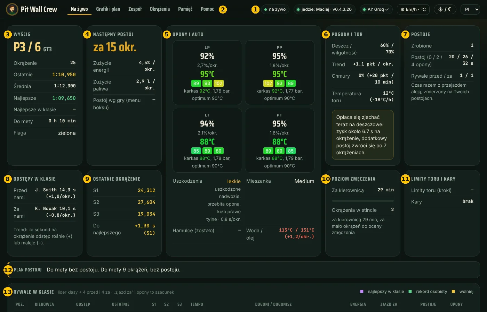
- Stan: czy dane płyną na żywo, kto jedzie, czy działa AI.
- Wygląd: ciemny motyw domyślnie, przełącznik ☀/☾ u góry. Czasy w kolorach: fioletowy – najlepszy w klasie, zielony – Twój rekord, żółty – wolniej. Pasek „Uszkodzenia” pod mapą pojawia się tylko, gdy auto jest uszkodzone (schemat auta, strata na okrążeniu, prędkość maks., ile może trwać naprawa i porada). W wyścigu na okrążenia „Do mety” pokazuje okrążenia (np. 12 / 40).
- Założyciel zespołu: ma własne hasło (podaje je przy zakładaniu zespołu albo w zakładce Zespół: „Zostań założycielem”). Tylko on usuwa i zmienia imiona kierowców oraz zmienia hasło zespołu; na pit wall wchodzi z zaznaczonym „Jestem założycielem”.
- Kilka aut zespołu w jednym wyścigu: każde auto ma osobny podgląd (lista u góry, z numerem auta); wiadomości i pytania idą do kierowcy wybranego auta. Każdy kierowca słyszy swojego inżyniera i spottera.
- Grafik na żywo: pasek stintów (kolor = kierowca, czerwone „TERAZ”). Okrążenia: filtry (sesja – każdy wyścig osobno; auto – gdy jedzie kilka aut zespołu, każde ma swoją tabelę; kierowca, stint, tylko czyste), wykres tempa, kolorowe czasy i sektory S1–S3. Mapa porównania: do 3 najlepszych okrążeń kierowców zespołu na kształcie toru – kolor odcinka = kto tam najszybszy, punkty hamowania, prędkość każdego okrążenia po najechaniu lub kliknięciu, przybliżanie i szczegóły zakrętu (hamowanie, najmniejsza prędkość, bieg, pełny gaz, gaz i hamulec) oraz różnice w setupie (to samo auto; Twoje setupy jako A, B, C…). Pamięć: notatki jako karty z wyszukiwaniem i filtrem toru. Pomoc: spis treści.
- Zakładki: Na żywo, Grafik i plan, Zespół, Okrążenia (na górze podsumowanie sesji: najlepsze i średnie okrążenie, równość, paliwo i energia na okrążenie – dla każdego kierowcy i stintu), Pamięć, Pomoc.
- Wyścig: pozycja w klasie, okrążenie, czasy, czas do mety, flaga.
- Następny postój: za ile okrążeń, zużycie energii i paliwa, co zrobić na postoju.
- Opony i auto: zużycie i temperatury każdej opony, uszkodzenia, silnik, hamulce.
- Pogoda i tor: deszcz, wilgotność, chmury, temperatura toru i uwagi inżyniera.
- Rywale w klasie: odstępy, tempo, kto kogo dogoni, energia, przewidywany zjazd.
- Porównanie z kolegą: po każdym czystym okrążeniu – w których zakrętach i o ile kolega z zespołu jest szybszy (jego najlepsze okrążenie w podobnych warunkach). W Assetto Corsa także kolega w innym aucie tej samej klasy – wtedy tylko gdzie i o ile, bez rad.
- Grafik stintów: kto jedzie, kiedy zmiana, co na postoju, o ile minut grafik przesunął się względem planu. Gdy na dziś nie ma planu, układa się sam dla kierowcy, który jedzie – z długości wyścigu i liczby opon dostępnych w grze.
Niżej na tej stronie są też mapa toru z autami i radio zespołu: „Do kierowcy” (inżynier przeczyta wiadomość), „Zapytaj inżyniera” (odpowiedź głosem), „Zapytaj (tylko tekst)”, „Do pamięci”.
Na telefonie
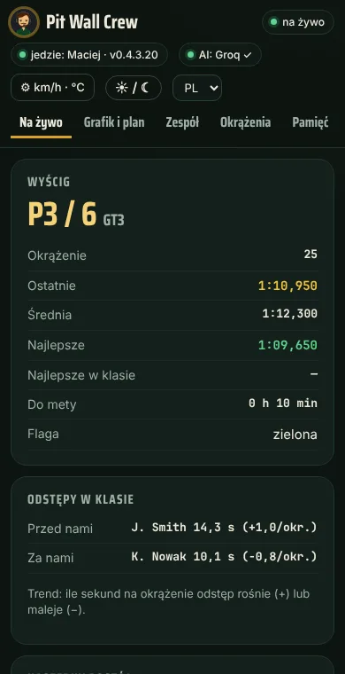
Zakładka Zespół
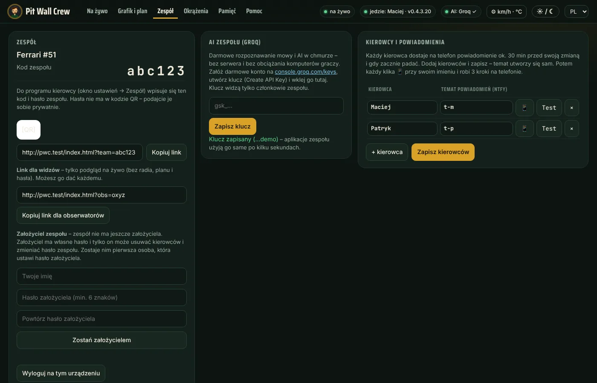
Kod zespołu i kod QR do pit walla, lista kierowców z tematami powiadomień, klucz Groq
i link dla widzów – sam podgląd na żywo, bez radia i planu; można go dać każdemu. Gdy jedzie kilka aut zespołu (np. Assetto Corsa), widz wybiera z listy u góry, które auto ogląda (kierowca – auto). Wybór zostaje w adresie (&auto=…), więc można podać link do konkretnego auta.
Grafik i plan (przed długim wyścigiem, jedna osoba)
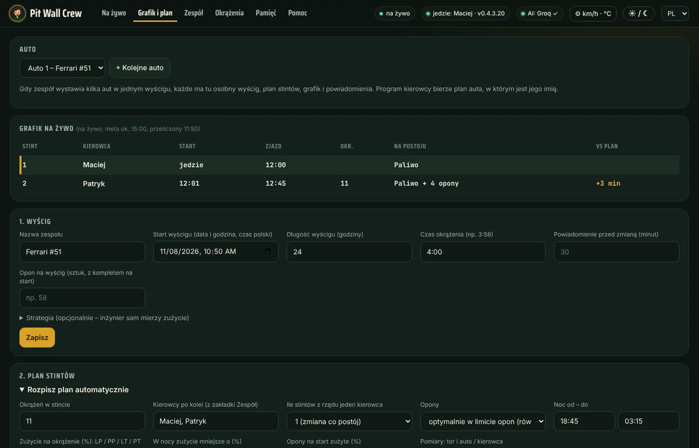
- Auto (na górze): gdy zespół wystawia kilka aut w jednym wyścigu, + Kolejne auto – każde ma osobny wyścig, plan stintów, grafik i powiadomienia. Program kierowcy bierze plan auta, w którym jest jego imię.
- 1. Wyścig: data i godzina startu, długość, czas okrążenia, ile opon macie na wyścig → Zapisz.
- 2. Plan stintów → Rozpisz plan automatycznie: okrążenia w stincie, kolejność kierowców, zużycie opon (w polu Pomiary wybierz tor i auto oraz kierowcę – Wczytaj wpisze zużycie opon i czasy całego postoju zmierzone w Waszych sesjach), czasy postoju, Opony na start zużyte (%) – gdy startujecie na komplecie z kwalifikacji → Rozpisz plan. Program rozdzieli opony tak, żeby zużywały się jak najrówniej.
- W tabeli popraw, co trzeba: kierowca z listy, okrążenia, Lewe / Prawe = zmiana opon po tej stronie → Zapisz plan. Licznik pokaże, czy mieścicie się w oponach.
W wyścigu grafik przelicza się sam z prawdziwego tempa. Inżynier zjeżdża i zmienia opony według planu (chyba że któraś opona nie dojedzie albo zabraknie energii). Plan działa w wyścigu o długości wpisanej w „1. Wyścig”.
Powiadomienia na telefon (każdy kierowca, 2 minuty)
- Zainstaluj darmową aplikację ntfy (Google Play / App Store).
- Na pit wallu: Zespół → przy swoim imieniu kliknij 📱 – zobaczysz swój temat i kod QR.
- W ntfy dotknij +, wpisz temat i Subskrybuj (albo zeskanuj kod QR).
- Kliknij Test przy swoim imieniu – na telefonie przyjdzie „Pit Wall Crew – test”.
Powiadomienie przychodzi ok. 30 minut przed Twoją zmianą, drugie – gdy zmiana przesunie się o 10 minut lub więcej, a także gdy zacznie padać. Kierowca może też wysłać wiadomość całemu zespołowi głosem: „wyślij wiadomość do zespołu: zaraz zjeżdżam” (albo jednej osobie: „powiadomienie na telefon Amadeusz: …”).
Długi wyścig (np. 24 h)
- Kierowca, który jedzie, ma włączony Pit Wall Crew przez cały stint – to jego aplikacja wysyła dane na pit wall i powiadomienia.
- Pozostali mogą wyłączyć grę, program i komputer. Po powiadomieniu na telefon włącz komputer, LMU i Pit Wall Crew, zanim wsiądziesz.
- Plan, grafik, wiadomości, pamięć zespołu i odprawa od poprzedniego kierowcy są w bazie zespołu – program pobierze je sam.
Próba przed wyścigiem (15 minut)
- Wszyscy uruchamiają Pit Wall Crew – zielone Zespół i AI: Groq.
- Jeden kierowca klika Test bez gry. Pozostali otwierają pit wall – dane powinny być „na żywo”.
- Kierowca pyta głosem „ile paliwa?” – odpowiedź słychać u wszystkich.
- Ze pit walla wyślijcie „Do kierowcy” – inżynier przeczyta wiadomość.
Fair share (LMU)
W wydarzeniach zespołowych każdy kierowca, który przejechał choć okrążenie, musi mieć co najmniej 50% / liczba kierowców okrążeń zespołu (2 kierowców – 25%, 3 – 16,7%, 4 – 12,5%, 5 – 10%, 6 – 8,3%), inaczej cała załoga nie dostaje DR/SR. Inżynier liczy okrążenia każdego kierowcy, przypomina na postoju, ile komu brakuje, ostrzega, gdy robi się ciasno, i odpowiada na „fair share?”. Na pit wallu – w zakładce Na żywo.
Podsumowanie po wyścigu
Na mecie inżynier krótko mówi wynik i porównuje go z pozycją startową: chwali za awans, a po stracie pociesza (bierze pod uwagę uderzenia i kary). Pełne podsumowanie (wynik, postoje, fair share, Twoje tempo i równość, wyjazdy, zużycie) jest w oknie programu, na pit wallu i w pliku recordings\podsumowanie_….txt.
Gdy coś nie działa
| Objaw | Co zrobić |
|---|---|
| „Czekam na LMU” mimo włączonej gry | W LMU: Settings → Gameplay → Enable Plugins = ON, potem uruchom grę ponownie. |
| Inżynier mnie nie słyszy / „Nie słyszę Cię” | Mikrofon i przycisk → Test 3 s. Sprawdź wyciszenie na słuchawkach i Windows → Prywatność → Mikrofon. |
| „Zły kod albo hasło zespołu” | Zespół → popraw → Połącz z zespołem → Zapisz. |
| Nie pamiętam kodu albo hasła zespołu | Kod: zakładka Zespół na pit wallu u kogoś zalogowanego (albo lista zespołów w programie i na stronie). Hasło: zna je założyciel i każdy, kto je wpisał w programie. Nowe hasło zespołu ustawia założyciel: pit wall z zaznaczonym „Jestem założycielem” → Zespół → Zmień hasło zespołu; gdy sam go nie pamięta – „Poproś autora o nowe hasło” i Pomoc → Zgłoś problem z kodem zespołu. |
| Pit wall: „brak danych z gry” | U kierowcy musi działać aplikacja z zielonym „Zespół”. |
| „AI: Groq – zły klucz” | Wklej klucz ponownie (pit wall → Zespół → AI zespołu). |
| Każdy komunikat słychać dwa razy | Program działa podwójnie: zamknij aplikację, w Menedżerze zadań zakończ „pythonw”, uruchom raz. |
| Nie przychodzą powiadomienia | Start wyścigu i kierowcy w planie, temat w ntfy, przycisk Test; u kogoś z zespołu działa aplikacja. |
| Gra się przycina | Najczęściej brakuje pamięci karty graficznej: niższe tekstury, mniej widocznych aut i cieni, zamknij inne programy. |
| „System Windows ochronił ten komputer” przy instalacji | Instalator nie ma jeszcze podpisu cyfrowego. Kliknij Więcej informacji → Uruchom mimo to. |
| Windows 11 blokuje instalator bez „Uruchom mimo to” | Włączona „Inteligentna kontrola aplikacji” nie przepuszcza programów bez podpisu cyfrowego. Można ją wyłączyć (Zabezpieczenia Windows → Kontrola aplikacji i przeglądarki), ale Windows nie pozwala potem włączyć jej z powrotem. |
| AVG albo Avast skanuje instalator („CyberCapture”) | Antywirus sprawdza w chmurze nowy plik bez podpisu cyfrowego. Poczekaj na wynik albo kliknij Otwórz mimo to. |
| „Nie zrozumiałem”, głos inżyniera urywa się, w komunikatach „Antywirus (Avast/AVG) blokuje…” | Avast/AVG blokuje połączenia programu. Avast/AVG → Menu → Ustawienia → Ogólne → Wyjątki → Dodaj wyjątek → folder Dokumenty\Pit Wall Crew, potem uruchom program ponownie. |
Zgłoś problem albo sugestię
W aplikacji: Pomoc → Zgłoś problem, na pit wallu: zakładka Pomoc. Zgłoszenie trafia prosto do autora. W trakcie jazdy powiedz „zgłoś błąd: …” (np. „zgłoś błąd: spotter powiedział z lewej, a nikogo nie było”) – program dołączy miejsce na torze, okrążenie i ostatnie komunikaty inżyniera; samo „zgłoś błąd” – inżynier zapyta, co się stało. Za Twoją zgodą aplikacja może sama wysłać raport, gdy się zepsuje (bez nagrań głosu, kluczy i haseł) – włączasz to i wyłączasz na tej samej stronie. Tam też wyłączysz anonimowy licznik użytkowników (losowy numer instalacji, wersja i język – bez imion i danych z gry) i statystyki użycia funkcji (nazwy funkcji, liczby i czas uruchomienia – bez treści pytań) oraz zdania, które AI dopasowało do poleceń (bez imion – najczęstsze trafiają do programu dla wszystkich). Aktualizacje pobierają tylko zmienione pliki, gdy masz poprzednią wersję. Osobno wyłączysz wysyłanie pytań, których inżynier nie zrozumiał (sama treść, bez imion – autor dopisuje brakujące komendy). Szczegóły: Prywatność.
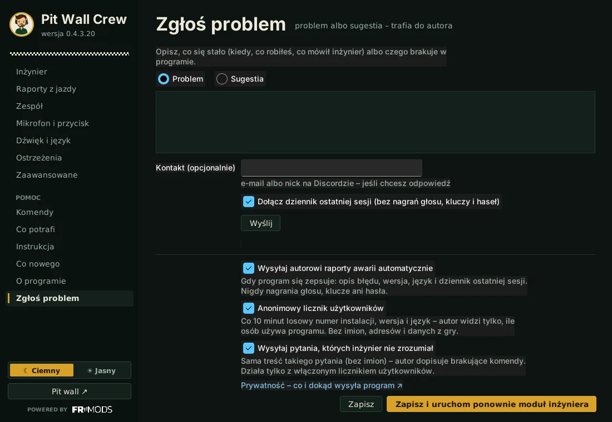